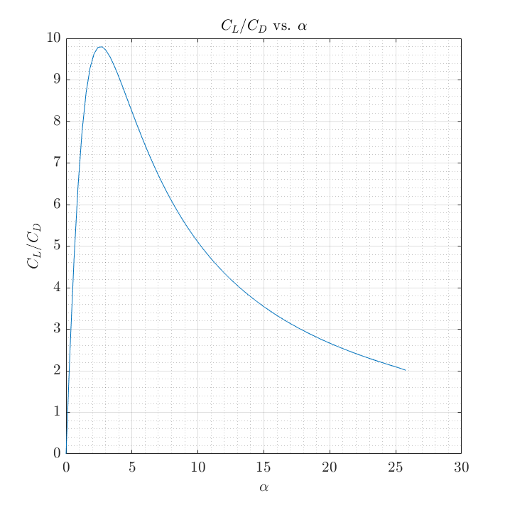
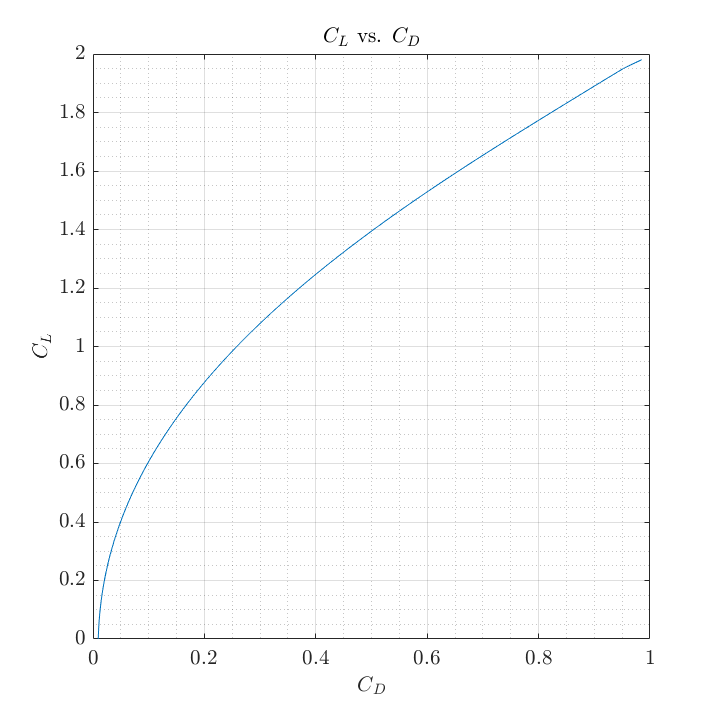
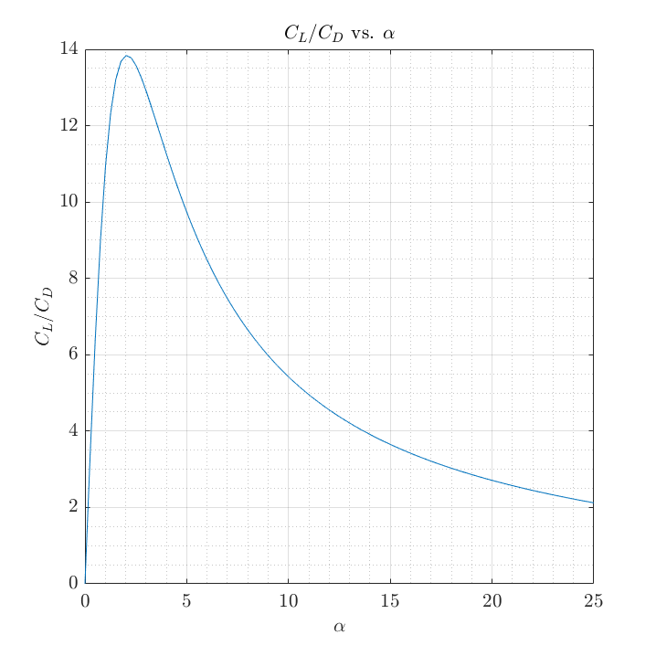

Contents
Problem 1
close all
clear;clc
disp('=== Problem 1 ===')
p1 = 100;
gamma = 1.4;
theta1 = deg2rad(12);
theta2 = deg2rad(8);
mu1 = deg2rad(20);
M1 = 1/sin(mu1);
disp(['a) ' 'M1 = ' num2str(M1)])
syms m2 m3 real
eqn = theta1 == PM(m2,gamma) - PM(M1,gamma);
M2 = abs(double(vpasolve(eqn,m2)));
p2 = p1 * ( (1+(gamma-1)/2*M1^2) ...
/(1+(gamma-1)/2*M2^2) ) ^ (gamma/(gamma-1));
beta2 = TBM_get_beta(M2,theta2,gamma);
p3 = p2 * TBM_get_pres(M2,beta2,gamma);
M2n = M2 * sin(beta2);
M3n = sqrt( (M2n^2 + 2/(gamma-1)) / (2*gamma/(gamma-1)*M2n^2-1) );
M3 = M3n / sin(beta2-theta2);
disp(['b) ' 'M3 = ' num2str(M3)])
disp([' ' 'p3 = ' num2str(p3)])
disp(' ')
=== Problem 1 ===
a) M1 = 2.9238
b) M3 = 3.1136
p3 = 72.8548
Problem 2
close all
clear;clc
disp('=== Problem 2 ===')
disp('a) See figure attached in HW submission.')
disp('b) See derivation attached in HW submission.')
disp('c) ')
alpha_vect = deg2rad(linspace(0,30,100));
cl_vect = zeros(length(alpha_vect),1);
cd_vect = zeros(length(alpha_vect),1);
syms m1 m2 m4 real
for i = 1:length(alpha_vect)
alpha = alpha_vect(i);
theta = deg2rad(4);
gamma = 1.4;
p = 100;
Mi = 2.5;
c = 1;
t = 0.07;
if alpha <= theta
t1 = theta - alpha;
beta1 = TBM_get_beta(Mi,t1,gamma);
p1 = p * TBM_get_pres(Mi,beta1,gamma);
Min = Mi * sin(beta1);
M1n = sqrt( (Min^2 + 2/(gamma-1)) / (2*gamma/(gamma-1)*Min^2-1) );
M1 = M1n / sin(beta1-t1);
else
t1 = theta - alpha;
eqn = -t1 == PM(m1,gamma) - PM(Mi,gamma);
M1 = abs(double(vpasolve(eqn,m1)));
p1 = p * ( (1+(gamma-1)/2*Mi^2) ...
/(1+(gamma-1)/2*M1^2) ) ^ (gamma/(gamma-1));
end
if size(M1,1) == 0
continue
end
t2 = -theta - alpha;
eqn = -t2 == PM(m2,gamma) - PM(M1,gamma);
M2 = abs(double(vpasolve(eqn,m2)));
p2 = p1 * ( (1+(gamma-1)/2*M1^2) ...
/(1+(gamma-1)/2*M2^2) ) ^ (gamma/(gamma-1));
t3 = alpha + theta;
beta3 = TBM_get_beta(Mi,t3,gamma);
p3 = p * TBM_get_pres(Mi,beta3,gamma);
Min = Mi * sin(beta3);
M3n = sqrt( (Min^2 + 2/(gamma-1)) / (2*gamma/(gamma-1)*Min^2-1) );
M3 = M3n / sin(beta3-t3);
t4 = -theta;
eqn = -t4 == PM(m4,gamma) - PM(M3,gamma);
M4 = abs(double(vpasolve(eqn,m4)));
p4 = p3 * ( (1+(gamma-1)/2*M3^2) ...
/(1+(gamma-1)/2*M4^2) ) ^ (gamma/(gamma-1));
cl = ( -cos(theta-alpha)*p1 - cos(-theta-alpha)*p2 ...
+cos(theta+alpha)*p3 + cos(-theta+alpha)*p4 ) / (0.5*gamma*p*Mi^2);
cd = ( sin(theta-alpha)*p1 + sin(-theta-alpha)*p2 ...
+sin(theta+alpha)*p3 + sin(-theta+alpha)*p4 ) / (0.5*gamma*p*Mi^2);
cl_vect(i) = cl;
cd_vect(i) = cd;
end
alpha_vect(imag(cl_vect)~=0) = [];
cd_vect(imag(cl_vect)~=0) = [];
cl_vect(imag(cl_vect)~=0) = [];
alpha_vect = rad2deg(alpha_vect);
figure(1)
plot(alpha_vect,cl_vect./cd_vect)
title('$C_L/C_D$ vs. $\alpha$')
xlabel('$\alpha$')
ylabel('$C_L/C_D$')
grid(gca,'minor')
grid on
latexify
figure(2)
plot(cd_vect,cl_vect)
title('$C_L$ vs. $C_D$')
xlabel('$C_D$')
ylabel('$C_L$')
grid(gca,'minor')
grid on
latexify
disp(' ')
=== Problem 2 ===
a) See figure attached in HW submission.
b) See derivation attached in HW submission.
c)
 
Problem 3
close all
clear;clc
disp('=== Problem 3 ===')
syms x real
t = 0.03;
c = 1;
Mi = 2.5;
p = 100;
gamma = 1.4;
h = t - t.*(x./c).^2;
theta = diff(h,x);
theta0 = atan(double(subs(theta,x,-1)));
pres_points = 25;
syms m1 real
mU = sym('mU', [pres_points,1]) ;
mL = sym('mL', [pres_points,1]) ;
alpha_vect = deg2rad(linspace(0,25,100));
cl_vect = zeros(length(alpha_vect),1);
cd_vect = zeros(length(alpha_vect),1);
for i = 1:length(alpha_vect)
alpha = alpha_vect(i);
if alpha <= theta0
t1 = theta0 - alpha;
beta1 = TBM_get_beta(Mi,t1,gamma);
p1 = p * TBM_get_pres(Mi,beta1,gamma);
Min = Mi * sin(beta1);
M1n = sqrt( (Min^2 + 2/(gamma-1)) / (2*gamma/(gamma-1)*Min^2-1) );
M1 = M1n / sin(beta1-t1);
else
t1 = theta0 - alpha;
eqn = -t1 == PM(m1,gamma) - PM(Mi,gamma);
M1 = abs(double(vpasolve(eqn,m1)));
p1 = p * ( (1+(gamma-1)/2*Mi^2) ...
/(1+(gamma-1)/2*M1^2) ) ^ (gamma/(gamma-1));
end
t3 = theta0 + alpha;
beta3 = TBM_get_beta(Mi,t3,gamma);
p3 = p * TBM_get_pres(Mi,beta3,gamma);
Min = Mi * sin(beta3);
M3n = sqrt( (Min^2 + 2/(gamma-1)) / (2*gamma/(gamma-1)*Min^2-1) );
M3 = M3n / sin(beta3-t3);
x = linspace(-1,1,pres_points)';
theta_vect = double(subs(theta,x));
thetas = theta_vect-theta_vect(1);
eqnU = -thetas == PM(mU,gamma) - PM(M1,gamma);
eqnL = -thetas == PM(mL,gamma) - PM(M3,gamma);
MU = struct2cell(vpasolve(eqnU,mU));
ML = struct2cell(vpasolve(eqnL,mL));
m_uu = zeros(length(MU),1);
m_ll = zeros(length(ML),1);
for k = 1:length(MU)
m_uu(k) = abs(double(MU{k}));
m_ll(k) = abs(double(ML{k}));
end
pu = p1 .* ( (1+(gamma-1)./2.* M1.^2) ...
./(1+(gamma-1)./2.*m_uu.^2) ) .^ (gamma./(gamma-1));
pl = p3 .* ( (1+(gamma-1)./2.* M3.^2) ...
./(1+(gamma-1)./2.*m_ll.^2) ) .^ (gamma./(gamma-1));
cl = sum( pl.*cos(theta_vect+alpha)...
-pu.*cos(theta_vect-alpha) )...
/length(pu)/(0.5*gamma*p*Mi^2);
cd = sum( pl.*sin(theta_vect+alpha)...
+pu.*sin(theta_vect-alpha) )...
/length(pu)/(0.5*gamma*p*Mi^2);
cl_vect(i) = cl;
cd_vect(i) = cd;
end
figure(3)
plot(rad2deg(alpha_vect),cl_vect./cd_vect)
title('$C_L/C_D$ vs. $\alpha$')
xlabel('$\alpha$')
ylabel('$C_L/C_D$')
grid(gca,'minor')
grid on
latexify
=== Problem 3 ===
